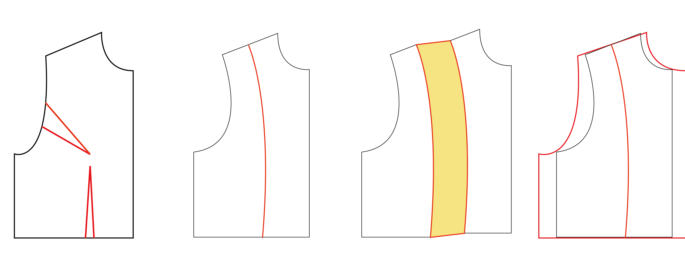

原型在手、褶子俱明之後，多半會生出一個疑問：「我做衣服，似乎根本不會把這些褶子全部用到？」——確實，除非做的是極貼身的衣服。然而這些褶子，實則是一個個「擴充的起點」。
以一件落肩T恤為例：先把正面的公主線移上肩頭，與腰間的褶子對接成一條線，再慢慢拆開——沿著這些褶子，把前片一步步擴充出去，最後重新修形、修腋下，一件T恤的版型方才成形。
直接畫一個很大件的東西，做起來也會像。可是你並不知道它從何而來——「彷彿這樣畫，就能長出一件很大片的衣服」。其實每一分量皆有出處。知道這個量是從哪根褶子變出來的，下刀修改才會精準：才看得出「這個腋下不對」、「衣長應該到這裡」，甚至加的量該加在哪裡——前身要加 2 公分，便知道是紙型的中間要擴充 2 公分。
背部亦然。T恤不需要肩褶，卻仍要從肩褶的位置剪開、在裡面加量，慢慢擴成一件寬鬆的T恤。這便是原型版到成衣的距離。

還有一事想提。真正的、我所認識的版師，其實少有動手打原型版的——經驗深厚至此，這件衣服需要哪些尺寸、大約做多少，他們心裡有數。他們的原型版，長在腦中。肩要多高多低、何處收多少、哪裡添一分量，直接做出樣品，就樣品開始討論、修改——這才是我所認識的版師的工作樣貌。
概念既備，下一步就是取得屬於你自己的原型版。到本站的打版工具輸入三個數字——胸圍（穿著平常穿的內衣量）、腰圍、背長——便能得到圖 1-1 那張貼近身形的紙型，印出來就可以動手了。
回心得分享目錄（第二章製作中） →